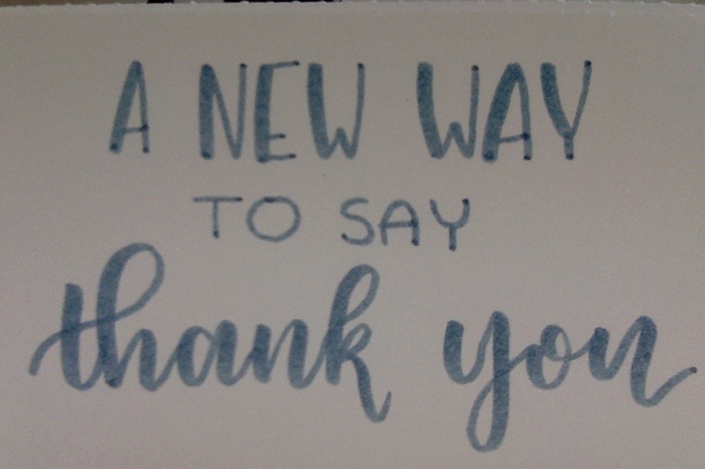

Reinventing the way we show gratitude.
Home | Cards | Custom | Contact
You no longer have to choose between beauty and convenience.
I've always been disappointed with the common, cheap thank you cards available at many drugstores and supermarkets. As someone who has always had an appreciation for art and aesthetic beauty, I set out to re-invent the way we show gratitude. In my mind, a thank you card should be a unique and elegant way of showing someone your appreciation, not a neon-colored cheesy message that's left for you to simply sign at the bottom.
Many of us make a big mistake in thinking that the simple act of getting and signing a card automatically means that the recipient will appreciate and admire it. This is not the case. If things were that easy we would all be Olympic gold medalists, Nobel Prize winners AND millionaires. To show real thought it takes a little more effort.
There have been many times when I have needed last-minute greeting cards myself but have never been satisfied with any of the options conveniently available. Many cheap greeting card companies have turned the act of "showing thanks" into a complete joke. In creating PapaInk, we want to work to undo that.
With our wide range of selection, you can easily find a card that suits any occasion. Each one is handmade from scratch, resulting not only in high quality but a unique new style. Our careful approach to design brings a fresh meaning to the term "Greeting Card," and any recipient will surely be pleased. Whether it's your five year old nephew's birthday party or your parent's anniversary, PapaInk has a card perfectly fit for the occasion.